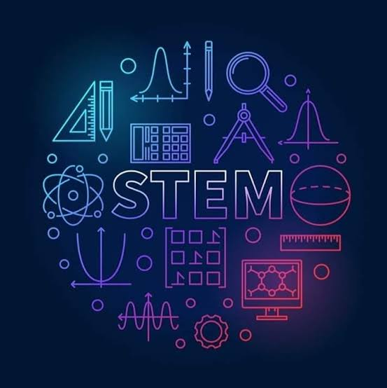

STEM
The STEM strand or Science, Technology, Engineering, and Mathematics strand is one of the strands offered in the senior high school (SHS) program in the Philippines. This strand is designed for students who are interested in pursuing careers in fields related to science, technology, engineering, and mathematics.
The STEM strand offers a range of subjects that focus on mathematics, natural sciences, engineering, and technology. It includes subjects such as calculus, physics, chemistry, biology, robotics, computer programming, and statistics. It also offers specialized subjects such as engineering and entrepreneurship, research, and design.
